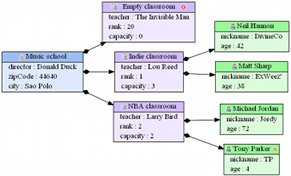
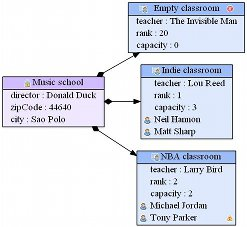
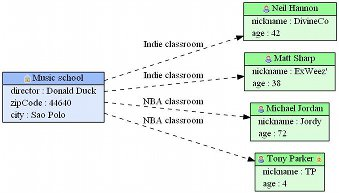

The RichAttributeFigure is used to render an EObject the same way as a simple attribute value (in other words with an AttributeFigure).
It is helpful when it is not necessary to show the whole content of an EObject as a complete node.
A RichAttributeFigure label is configured through an OCL expression (in order to be flexible enough to meet your own needs). TODO link OCL+functions
For example, with the school sample, it is possible to represent the Students directly in the Classroom nodes (see the right diagram) instead of representing them fully as nodes (as on the left diagram) :
|  |  |
It accepts the following properties :
| Category | Name | Description |
|---|---|---|
| Appearance | labelExpression | The OCL expression to use to build the string representation for the EObject that is targeted by the EReference |
| labelStyle | The style of the attribute figure's label | |
| Model | eReference | The EReference that gives the rich attribute(s) EObject(s) |
The RichReferenceFigure is used to render an EObject the same way as a reference (in other words with an ReferenceFigure).
It is helpful when your model contains Association classes. In other words, it is helpful when you want to represent a relation between two EObjects that goes through an intermediate EObject without representing that intermediate EObject as a complete node.
A RichReferenceFigure also allows to attach up to three labels on the edge (at the start, in the middle and at the end). The labels are configured through an OCL expression (in order to be flexible enough to meet your own needs). TODO link OCL+functions
For example, with the school sample, it is possible to represent the Students directly in the Classroom nodes (see the right diagram) instead of representing them fully as nodes (as on the left diagram) :
|  |
It accepts the following properties :
| Category | Name | Description |
|---|---|---|
| Appearance | color | The edge color |
| customSourceArrow | The custom source arrow (graphviz compliant arrow style, ignored if sourceArrowType is not set to 'custom') | |
| customTargetArrow | The custom target arrow (graphviz compliant arrow style, ignored if targetArrowType is not set to 'custom') | |
| labelAngle | This, along with labeldistance, determine where the headlabel (taillabel) are placed with respect to the head (tail) in polar coordinates. The origin in the coordinate system is the point where the edge touches the node. The ray of 0 degrees goes from the origin back along the edge, parallel to the edge at the origin. (same as Graphviz labelangle property) | |
| labelDistance | Multiplicative scaling factor adjusting the distance that the headlabel(taillabel) is from the head(tail) node (same as Graphviz labeldistance property) | |
| minimumEdgeLength | Minimum edge length (same as Graphviz minlen property) | |
| sourceArrowType | The source arrow type | |
| sourceLabelExpression | The OCL expression to use to build the source label of the edge | |
| sourceLabelStyle | The style of the source label | |
| standardLabelExpression | The OCL expression to use to build the standard (centered) label of the edge | |
| standardLabelStyle | The style of the standard (centered) label | |
| style | The edge style | |
| targetArrowType | The target arrow type | |
| targetLabelExpression | The OCL expression to use to build the target label of the edge | |
| targetLabelStyle | The style of the target label | |
| Model | eReference | The EReference that this figure will represent on the graph |
| targetEReference | The target EReference of the rich reference EClass |
The Filter allows to filter the nodes that will be represented on the diagram. A filter is built over an OCL constraint that tells to emf2gv if an EOjbtec must be drawn or not.
The filters must meet the following rules :
It accepts the following properties :
| Category | Name | Description |
|---|---|---|
| - | enabled | A boolean indicating if the filter is enabled or not |
| filterExpression | The OCL expression that is used to evaluate if the EObjects of the specified filter type (EClass) are to be shown in the diagram (the expression must return a boolean value) | |
| filteredType | The type (EClass) to which this filter will be applied |
The DynamicPropertyOverrider TODO.
It accepts the following properties :
| Category | Name | Description |
|---|---|---|
| - | enabled | A boolean indicating if the dynamic property overrider is enabled or not |
| overridingExpression | The OCL expression to be used to retrieve the overriding property value | |
| propertyToOverride | The figure's appearance property to override |